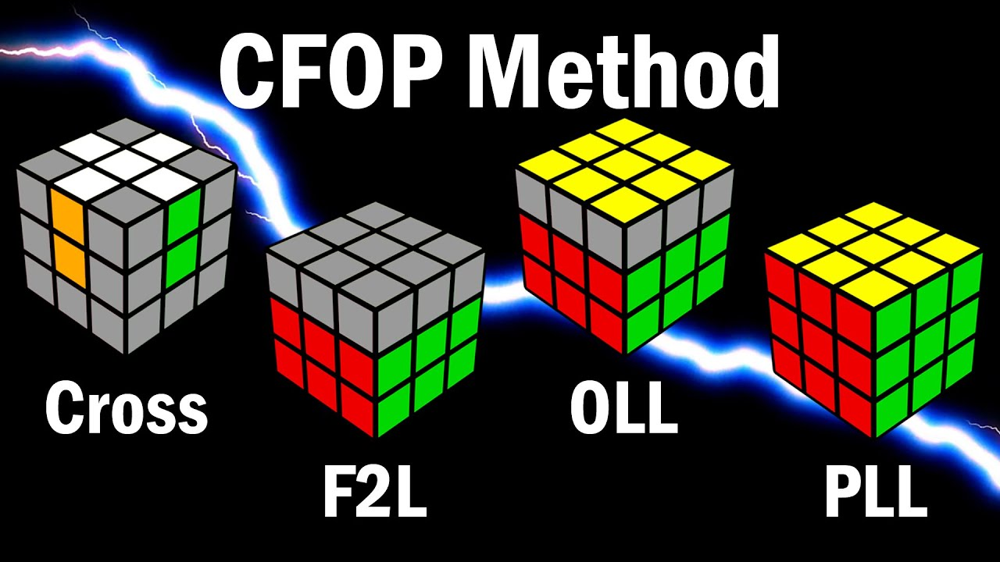

Spedcubing Methods
CFOP (Cross, F2L, OLL, PLL, pronounced C-F-O-P or C-fop) is a 3x3
speedsolving method proposed by several cubers around 1981. It is also
known as the Fridrich Method after its popularizer, Jessica Fridrich.
In part due to Fridrich's publication of the method on her website in
1995, CFOP has been the most dominant 3x3 speedcubing method since
around 2000, with it and its variants used by the vast majority of the
top speedcubers such as Feliks Zemdegs, Max Park, Sebastian Weyer,
Mats Valk, etc.

The ZZ method is a 3x3 speedsolving method created by Zbigniew
Zborowski in 2006. The method is focused both on low move count and
high turning speed; during the majority of F2L, the solver only needs
to make L, U, and R moves, which means that the solver's hands never
leave the left and right sides of the cube, resulting in faster
solving. In addition, edges are already oriented when the solver
reaches the last layer, meaning the solver has fewer cases to deal
with. The method, including both EOLine and EOCross, was originally
proposed in 2003 by Ryan Heise on the Yahoo! Group in this post.
However, it became popular and associated with Zbigniew Zborowski
after he independently created the method in 2006 and developed a
website.